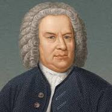
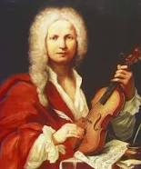
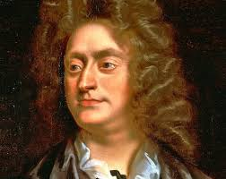
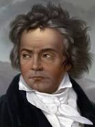
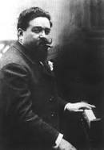
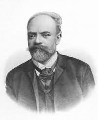
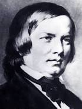

"Music gives soul to the universe,
wings to the mind, flight to the imagination, and life to everything"
-Plato
Music is one of the most influencial tools in human history. It represents culture, people, and the human imagination.
Take popular artists for example. Their massive following is due to their music!
So, for one to truly understand this medium of art, one must understand its significance in human history, from Amadeus to Ariana.
Music is an art form, and cultural activity, whose medium is sound.
General definitions of music include common elements such as pitch, rhythm, dynamics, and the sonic qualities of timbre and texture.
In the medieval period, music was dominated by European, Roman, and the predominant Georgian chants. It was used by the Church and some secular musicians to gather for mass and prayer.
Medieval music has a chant and monphonic sound with a slow rythmn. And as Europe rose from the dark age, the music became more polyphonic, leading to he introduction of more secular music
English and Scottish musicians were able to tell stories with music usually about the ideals of love and chivalry.
There were few instruments used in the medieval ages as pieces were usually sung. However, those pieces who did have intrumentals used wind, strings, and percussion.
Instruments such as the flute, harp, triangle, drums, trumpet, and bagpipe.
The medieval age musicians were unique to their time.
Hildegard von Bingen, the earliest female composer, wrote the first musical drama, "The Ritual of the Virtues".
Moniot d’Arras, a troubadour and a composer who wrote sacred monophonic songs such as “Ce fut en mai.”
Guillaume de Machaut, a composer who has representation in his pieces, wrote “Messe de Nostre Dame”.
Leonel Power, a prominent composers at the end of the medieval age, wrote the famous medieval piece "Alma redemptoris mater".
In the renaissance period, music varied more compared to medieval music. It permitted different ranges of tones and different instruments. Based on the name, music from the Renaissance period was about rebirth.
Music allowed for the recovery of ancient cultures from Greek, latin, and Roman literature.
Music works were more widely distributed because of the development of the printing press. Opera was created to give rebirth to ancient latin and Greek music.
Musicians were a highly sough after trade as they could keep political stability in a country through music. This is because despite the growing difference in class, music was a unifying factor.
Popular Musicians of the Renaissance period were:
Giovanni Pierluigi da Palestrina, who influenced church and secular music through his polyphonic style.
Baroque music is a period of Western art music composed.
This era is after the Renaissance music era. It was followed by the Classical era. It had the style marking the transition between Baroque and Classical eras.
The Baroque period is divided into three major phases: early, middle, and late. Overlapping, they are dated from 1580 to 1650, from 1630 to 1700, and from 1680 to 1750 respectively.
Baroque music makes up a major portion of the classical music. It is now widely studied, performed, and listened to. The term baroque comes from the Portuguese word barroco.
Key composers of the Baroque era include:
Johann Sebastian Bach for his expressive music.
Antonio Vivaldi known for his four seasons
George Frideric Handel for his great and talented life.
Claudio Monteverdi for his music.
Classical music is art music produced or rooted in the traditions of Western culture, including secular music.
While a more precise term is also used to refer to the period from 1750 to 1820.
which includes the Classical period and various other periods.
The central norms of this tradition became codified between 1550 and 1900.
And it is known as the common-practice period. Known composers of this era include:
Pyotr Ilyich Tchaikovsky who made an international impression from his music.
Debussy for his sad music.
Mozart for his popular music.







To Enhance your musical experience through expert help.